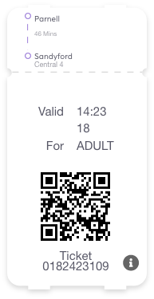
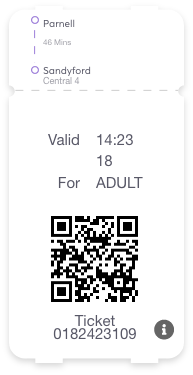

Download this ticket and tag on as you
normally would with a leap card. Tap this
on the Luas Ticket Reader Machines.
Download the PDF or Email it.
 

For those travelling on Luas only for a single or return journey. Ticket Vending Machines are
located at every stop. Please note that tickets may not be purchased onboard the trams.
Single and Return Tickets don’t require any Photo Identity Card. There is no student fare
applicable for Single and Return tickets. Single tickets are valid 90 mins from time of issue,
for one trip only. No breaks in journey are permitted. Return tickets are valid for outward and
return travel on day of issue only. The first trip has to be completed within 90 mins from time of issue.
Child Ticket: Valid 5-15 years inclusive. 0-4 years inclusive travel free. Proof of age may be required.
Child Leap Cards with different validity available; Child Leap cards 5-15 years can be used to pay for
travel by anyone who is 5 to 15 years old (inclusive, up to 16th birthday) and Child Leap Cards 16-18
years can be used to pay for travel by anyone who is 16 to 18 years old (inclusive, up to 19th birthday).
Persons 66 years and over can apply to the Department of Social and Family Affairs for a Free Travel Pass.
Click here for further information.